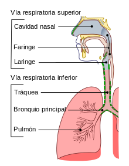
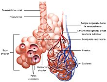
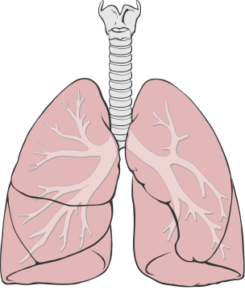

Está compuesto por órganos que realizan diversas funciones, pero, la enorme importancia que estos órganos poseen, es la capacidad de intercambiar dióxido de carbono y oxígeno con el medio, ya que los sistemas biológicos poseen como cualidad principal el de ser sistemas abiertos que intercambian constantemente con el medio que los rodea.
El hombre utiliza respiración pulmonar y su aparato respiratorio consta de :
Sistema de conducción: fosas nasales, boca, epiglotis,faringe, laringe, tráquea, bronquios principales, bronquios lobares, bronquios segmentarios y bronquiolos.
Sistema de intercambio: conductos y los sacos alveolares. El espacio muerto anatómico, o zona no respiratoria (no hay intercambios gaseosos) del árbol bronquial incluye las 16 primeras generaciones bronquiales, siendo su volumen de unos 159 ml.
FUNCIÓN
La función principal del aparato respiratorio consiste en desplazar volúmenes de aire desde la atmósfera a los pulmones y viceversa. Lo anterior es posible gracias a un proceso conocido como ventilación. A la par con esta función, los órganos del sistema respiratorio cumplen un conjunto de otras funciones importantes no relacionadas con el intercambio gaseoso como son:
Termorregulación y humectación del aire inspirado.
Descontaminación del aire inspirado de polvo y microorganismos.
Elaboración y secreción de IgA.
Participación en la regulación de la presión arterial mediante la producción de "enzima convertidora" que interviene en la transformación de angiotensina I en angiotensina II (metabolismo hidromineral).
Participa en la fonación; el olfato y en otras funciones que tienen una incidencia sistémica.
PARTES
El aparato respiratorio consta de los siguientes elementos:
- Fosa nasal: Consiste en dos amplias cavidades cuya función es permitir la entrada y salida del aire, el cual se humedece, filtra y calienta a una determinada temperatura a través de unas estructuras llamadas cornetes.
- Faringe: Estructura con forma de tubo situada en el cuello y revestido de membrana mucosa; conecta la cavidad bucal y las fosas nasales con el esófago y la laringe.
- Laringe: Es un conducto que permite el paso del aire desde la faringe hacia la tráquea y los pulmones. En la laringe se encuentran las cuerdas vocales que dejan entre sí un espacio llamado glotis.
- Tráquea: Es un conducto en forma de tubo que tiene la función de hacer posible el paso del aire entre la laringe y los bronquios. Su pared está reforzada por un conjunto de cartílagos con forma de C que dificultan que la vía se colapse por compresión externa sobre el cuello.
- Diafragma: Músculo que separa la cavidad torácica de la cavidad abdominal. Cuando se contrae baja y aumenta el tamaño de la cavidad torácica provocando la inspiración. Cuando se relaja sube, disminuye el tamaño de la cavidad torácica y provoca la espiración.

PULMONES
Órganos cuya función es realizar el intercambio gaseoso con la sangre. Dentro de cada pulmón, el árbol bronquial se divide progresivamente dando ramificaciones cada vez más pequeñas. La tráquea da origen a los dos bronquios principales que se dividen en bronquios secundarios o lobares. Cada bronquio lobar se divide en bronquios terciarios o segmentarios que se dividen en bronquiolos. El bronquiolo continúa el proceso de ramificación y da origen al bronquiolo terminal de donde parten los bronquiolos respiratorio que es donde se encuentran los sacos alveolares.
Bronquio: Conducto tubular fibrocartilaginoso que conduce el aire desde la tráquea hasta los bronquiolos.
Bronquiolo: Conducto que conduce el aire desde los bronquios hasta los alvéolos.
Alveólo: Los alveolos están situados al final de las últimas ramificaciones de los bronquiolos. Tienen la forma de pequeños sacos y son el lugar en el que se produce el intercambio de gases con la sangre. Su pared es muy delgada, pues está constituida por una capa unicelular, es decir formada por una única célula. Sumando los dos pulmones, el organismo humano dispone de alrededor de 300 millones de alveolos que si se desplegaran en su totalidad ocuparían una superficie de 60 m², esta enorme superficie es la que hace posible obtener la cantidad de oxígeno necesaria para las funciones vitales.

Bibliografía
1.-https://es.wikipedia.org/wiki/Aparato_respiratorio
2.-https://www.ecured.cu/Sistema_respiratorio